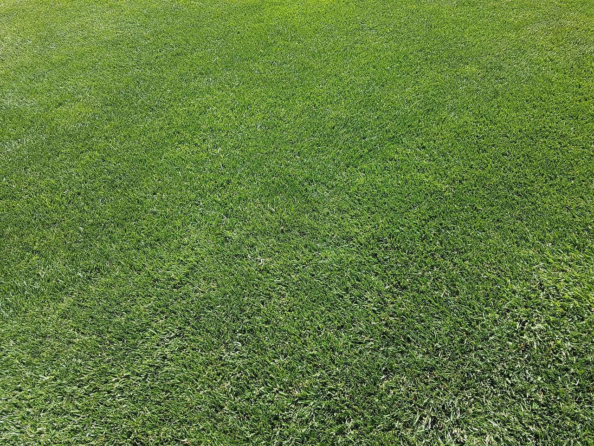

- Association Croquet
Wednesday
Starts 9.45am
Visitors welcome
Play timesWe play Wednesday, Friday, Saturday and Sunday.
New players are always welcome.
Association Croquet on Wednesday mornings and Saturday afternoons. Golf Croquet on Friday and Sunday afternoons, an hour earlier in winter.
Visitors welcome
Play timesVisitors welcome
Play timesVisitors welcome
Play timesVisitors welcome
Play timesAt no charge, with beginner coaching and all the gear provided. Most new players start with Golf Croquet: easy to learn, and a game takes under an hour.
Croquet combines the skill of billiards and the strategy of chess, outdoors on grass.


Mr F. Stimpson, Chairman of Stephens Shire Council, obtained the north east corner of Yeronga Park for croquet lawns, and on 15 October of that year he arrived with horse and plough to prepare the ground. Two lawns were laid, and a small clubhouse was erected. The club commenced with a membership of 18. Mr Stimpson's wife became the first president.
Wartime. Stringent cost cutting had to take place as money was very tight and the club was still in debt. It was decided to stop paying the tea lady, and members needed to bring their own afternoon tea.
Golf Croquet was mentioned for the first time. Previously only the traditional game of Association Croquet had been played. Today most new players start with it.
Film: Slow Motion Croquet, a ball running a hoop, not filmed at Stephens.
From the Croquet Queensland calendar on MyCroquet.
7–8 Nov
At Stephens Croquet Club
Enter26–30 Mar
At Stephens
Ask the clubFollow Stephens Croquet Club on Facebook for upcoming events and recent photos.